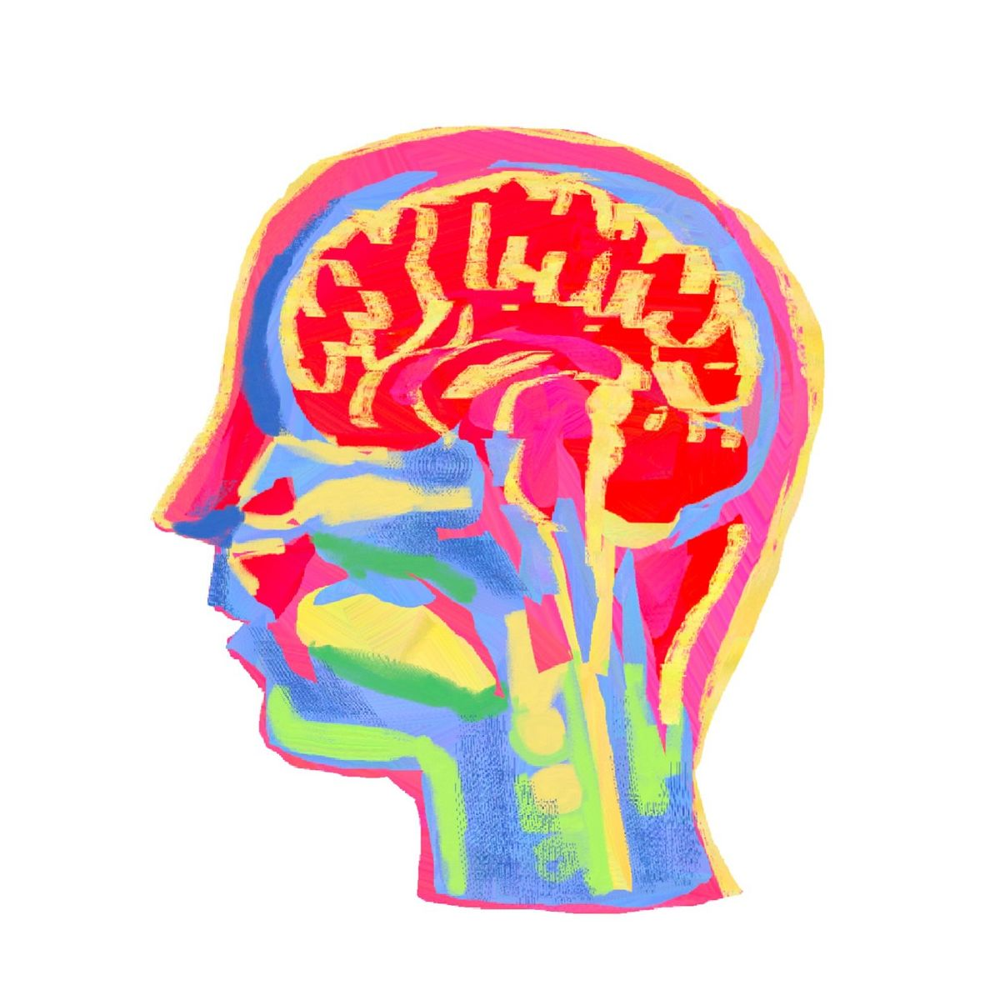
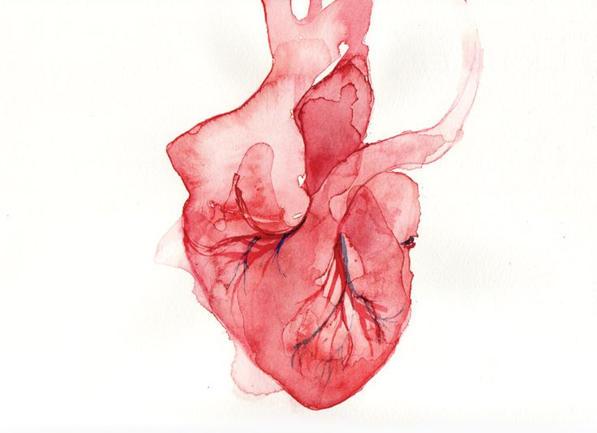
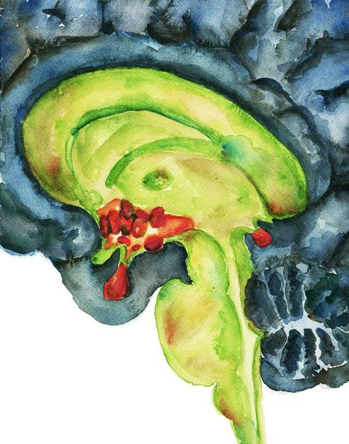
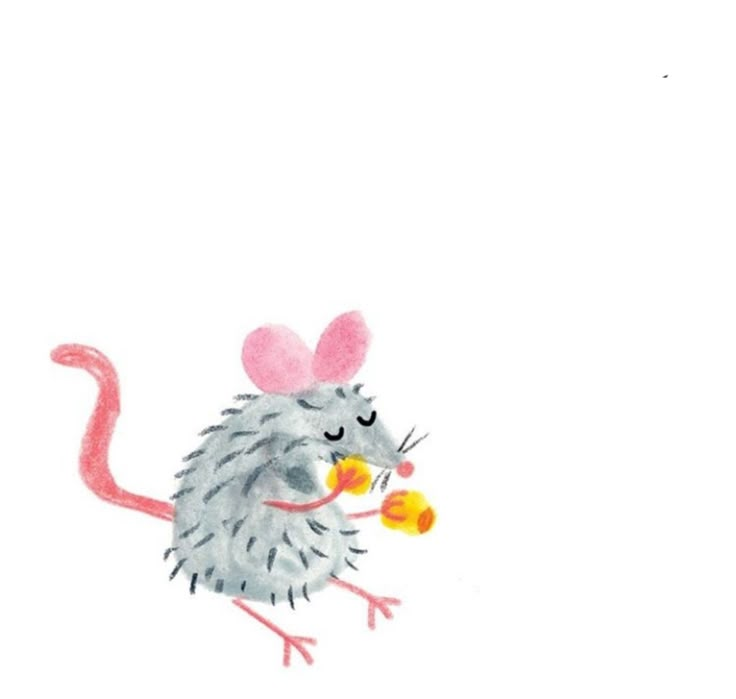
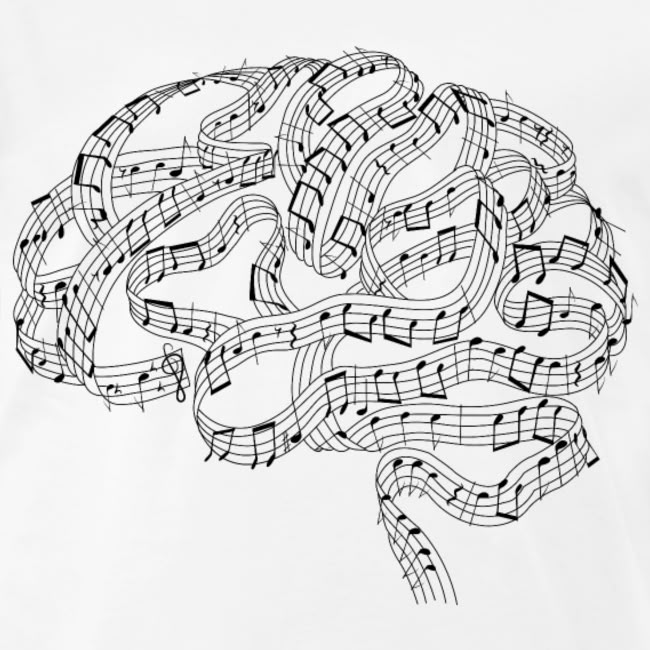

Hi, my name is
Rubana Murshed
Fascinated by the brain, driven by curiosity. I study how our biology shapes who we are — and what happens when it doesn't.

Researcher
What do I do?
I'm a researcher driven by a deep curiosity about how the brain shapes who we are. Right now, I'm working at the Douglas Research Centre in Montréal — studying cerebral blood flow in schizophrenia, training mice on cognitive tasks, and supporting 7T fMRI research on psychosis. Every day looks a little different, and I love that.
My path has taken me from McGill lecture halls to research labs to tech companies like Lightspeed and Unity — and through it all, what's stayed constant is my love for asking hard questions and finding rigorous ways to answer them. Science is my home, but I bring that same curiosity everywhere I go.
Featured Projects
View All →
Cerebral Blood Flow Patterns & Schizophrenia
Investigating cerebral blood flow in schizophrenia using ASL perfusion MRI to understand neural mechanisms underlying cognitive symptoms.

Motivational Learning using Pavlovian Conditioning
Studying appetitive and aversive learning in mice using a dual-valence Pavlovian paradigm to understand stress-related disorder risk factors.

Pairwise Visual Discrimination tasks in Touchscreen Chambers
Conducting touchscreen-based cognitive testing in mice at the CoBrA Lab, including training, task execution and behavioural data analysis.

Pitch Processing in Musicians
Analysing how frequency-following responses and functional connectivity differentiate pitch processing between musicians and non-musicians.
Want to collaborate
or just say hi?
I'm always open to research collaborations, conversations about neuroscience, or just a friendly chat.